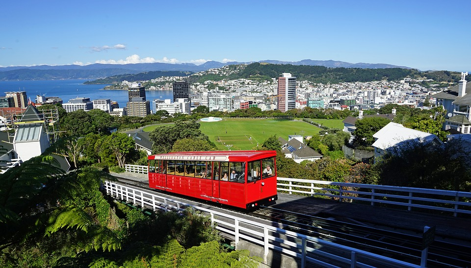

Wellington - die schöne Hauptstadt
Wellington, offizielle Bezeichnung: Wellington City (Māori Te Whanganui-a-Tara, wobei damit der Wellington Harbour und seine Umgebung gemeint ist), ist die Hauptstadt von Neuseeland und stellt zusammen mit den angrenzenden Städten Lower Hutt, Upper Hutt und Porirua nach Auckland den zweitgrößten Ballungsraum des Landes dar. Die Stadt Wellington selbst hat rund 190.000 Einwohner.
Quelle: Wikipedia
Cable Car
Wellington Cable Car ist eine meterspurige Standseilbahn in Wellington, der Hauptstadt von Neuseeland. Die 610 Meter lange Strecke verbindet den rund 120 Meter höher gelegenen Stadtteil Kelburn mit der Hauptgeschäftsstraße der Stadt, Lambton Quay. Das Cable Car System ist eines der bekanntesten Wahrzeichen der Stadt.
Quelle: Wikipedia